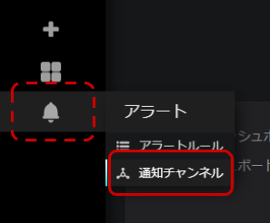
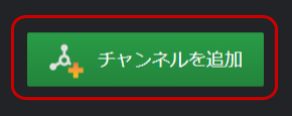
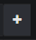

レシピ難易度：★☆☆☆☆
ソラコムより販売されている GPSマルチユニットSORACOM Edition をバーチャルに体験するハンズオンです。Web 上に用意した仮想的な GPSマルチユニットSORACOM Edition (以後、仮想マルチユニット) を操作して、SORACOM Harvest Data へのデータ格納や SORACOM Lagoon での可視化を体験します。SORACOM サービスを利用するためのアカウントは貸し出されます。
本ハンズオンを行うのに必要な時間、費用
本ハンズオンは以下の通りです。
- 必要な時間: 30分
- 費用: 0円
このコンテンツの進め方
ページの内容を読み、また作業を行ったら右下の［Next］を押して次のステップへ進みます。また、［Back］を使って戻ったり、左のナビゲーションメニューでもページの移動が可能です。
左上の［×］を押してコンテンツを終了することができます。また、ページを開きなおすことで再開できます。ページのアドレスはブラウザの［履歴］メニューを利用してください。
本レシピを行うためには以下のものをご用意ください。
ハードウェア
品名 | 数量 | 価格 | 購入先 | 備考 |
パソコン | 1 | ― | ― |
|
運営より連携されたフォームを入力すると、ハンスオンの情報が記載されてメールが送信されます。当メールへは、以下の情報が記載されています。
- 受付番号
- デバイス体験ページの URL
- SORACOM Harvest Data を確認するためのユーザー名・パスワード
- SORACOM Lagoon で可視化するためのメールアドレス・パスワード・デバイス名
これらの情報が記載されていることを確認して、デバイス体験ページの URL にアクセスします。
デバイス体験ページへアクセス
デバイス体験ページより、データを SORACOM へ送信します。ハンズオン情報に記載されたデバイス体験ページの URL へアクセスしてください。
データの送信
実際の GPS マルチユニット SORACOM Edition は以下 のようなデータを SORACOM へ送信できます。当ハンズオンではデバイス体験ページより下の表で太字で記された位置・温湿度・加速度を変更して定期送信をシミュレーションできます。
Key | 範囲 | 説明 |
lat | -90 ~ 90 | 緯度 (度) |
lon | -180 ~ 180 | 経度 (度) |
bat | -1, 1 ~ 3 | 電池ピクト(3段階、-1 は充電中) |
rs | -1 ~ 4 | アンテナピクト (-1は圏外) |
temp | -20 ~ 60 | 温度 (℃) |
humi | 0 ~ 100 | 湿度 (%) |
x | -8128 ~ 8128 | 加速度 X (mG) |
y | -8128 ~ 8128 | 加速度 Y (mG) |
z | -8128 ~ 8128 | 加速度 Z (mG) |
type | 0 or 1 or -1 | 0:定期送信・加速度割り込み 1:ボタン押下時の送信 -1:異常値 |
まずは、SORACOM への定期送信を有効にしましょう。「データを送信する」を ON にします。
「データを定期送信しています」と表示されれば成功です。
送信するデータの変更
「デバイスの状態を変更する」より温度・湿度、位置、加速度 (向き) を変更できます。それぞれお好きな状態へ変更してみましょう。この状態はいつでも変更でき、定期送信するデータへ反映されます。
仮想マルチユニットの画像が変わっていることも確認しましょう。
以上で、データの送信ができました。
SORACOM Harvest Data でデータを確認
データの定期送信を ON にしたら、「送信したデータを確認する」メニューより SORACOM サービスへ遷移します。まずは、SORACOM Harvest Data にて送信したデータを確認しましょう。デバイス体験ページの「SORACOM Harvest Data」をクリックすると、SORACOM ユーザコンソールが開きます。
SORACOM ユーザコンソールへログイン
ハンズオン情報に記載されたユーザー名とパスワードを入力してください。オペレーター ID に入力されている値は変更しません。

［自動更新］を ON にする
ログインに成功すると、SORACOM Harvest Data の画面へ遷移します。遷移しない場合は、再度デバイス体験ページの「SORACOM Harvest Data」をクリックしてください。
[自動更新] を ON にすることで、デバイス体験ページから送信されたデータが随時反映されます。
送信されたデータの確認
SORACOM Harvest Data では送信されたデータを簡易的に確認できます。グラフ左上のアイコンより可視化の形式を折れ線・棒グラフと変更したり、右上より表示するデータを変更してみましょう。可視化の形式が折れ線グラフ () となっていることを確認します。また、"●lat" "●lon" など temp, humi 以外をクリックして、表示するデータを temp, humi のみとすると以下の画像のように仮想マルチユニットの温度・湿度を表示できます。
また、可視化の形式をマップ形式 () とすると以下の画像のようにシミュレーションされた位置を表示できます。
下へスクロールするとデータが JSON 形式で格納されていることが確認できます。[ダウンロード] > [グラフ用データをダウンロード (CSV形式)] よりデータのダウンロードをしてみましょう。データが CSV 形式で取得できることがわかります。
以上で簡単なデータの確認が出来ました。デバイス体験ページより仮想マルチユニットの状態を変更して、SORACOM Harvest Data へ格納されてデータが変化することを確認してください。
SORACOM Harvest Data へ格納したデータを、よりカスタマイズしたダッシュボードで可視化したい場合は SORACOM Lagoon を利用します。デバイス体験ページより、[SORACOM Lagoon] をクリックして SORACOM Lagoon のログインページへ遷移しましょう。
SORACOM Lagoon へログイン
SORACOM Lagoon ログインページでは、ハンズオン情報に記載されたメールアドレスとパスワードを入力してください。

ダッシュボードの作成
当ハンズオンではダッシュボードのサンプルとしてテンプレートを用意しています。用意されたテンプレートを SORACOM Lagoon へインポートし、可視化のイメージをつかんでみましょう。
インポートするテンプレートをコピー
再度デバイス体験ページへ移動し、[送信したデータを確認する] > [SORACOM Lagoon ダッシュボードのテンプレート] > [クリップボードへコピーする] をクリックします。
SORACOM Lagoon へインポート
左上の + アイコンにマウスカーソルをかざし、[インポート] をクリックします。
[Or paste JSON] (JSON を貼り付ける) の欄へ、先ほどコピーしたテンプレートをペーストします (Windows の場合 Ctrl + V、Mac の場合 Command + V)。その後、[Load] をクリックします。
確認画面が表示されるので、[Import] をクリックします。
以下のようにダッシュボードが表示されたらインポート成功です。GPS マルチユニットから得られた各データを文字やグラフ、地図や表で可視化しています。
体験ページより仮想マルチユニットの状態を変更し、SORACOM Lagoon 上でどのように可視化されるかを体験してください。ダッシュボードへの反映には 1 ～ 2 分かかります。
(応用) ダッシュボードのカスタマイズ
当ハンズオンでは、SORACOM Lagoon のイメージをすぐにつかんでいただくためにサンプルのダッシュボードを用意しました。もしさらに詳しく SORACOM Lagoon を試したい場合は、「パネルの作成」や「アラートの作成」を参照してダッシュボードをカスタマイズしてみましょう。ここまででハンズオンを終了とする場合は、「後片付けと注意事項」に進んでください。
SORACOM Lagoon ではよりカスタマイズした可視化ができます。ここでは温度を可視化するグラフパネルを作成します。右上の [パネルを追加] アイコンをクリックし、[Graph] を選択します。
Panel Title 右側の▼アイコンをクリックし、[編集] を選択するとパネルを編集できます。
デバイスの選択
メトリックタブより、ハンズオン情報に記載のある "device-" から始まるデバイス名を選択し、右のドロップダウンからは "temp" を選択します。これにより、デバイス体験ページから送信した温度を可視化できます。
折れ線グラフで可視化する
[表示]タブより、描画モードに「点」を追加して見やすくします。
タイトルの設定
[全般] タブよりタイトルを指定します。
項目 | 設定値 | 備考 |
タイトル |
| 任意の名前が利用できます。 |
ダッシュボードの保存
右上の保存ボタン をクリックし、表示されたダイアログでダッシュボード名を入力した上で［保存］をクリックします。
をクリックし、表示されたダイアログでダッシュボード名を入力した上で［保存］をクリックします。
ダッシュボードの更新時は名前を変更内容を記載 (任意) し、保存してください。
新規にダッシュボードを保存する場合はダッシュボード名を設定します。
項目 | 設定値 | 備考 |
名前 |
| 任意の名前が利用できます。 |

これでパネルの作成が出来ました。グラフパネルではほかにも様々なオプションを用意しており、さらにグラフパネル以外にも豊富な種類のパネルを用意されていますので、ぜひ活用してみて下さい。
(参考ドキュメント : SORACOM Lagoon を利用して様々なパネルを作成する)
また、作成したダッシュボードをエクスポートしたい場合は、以下のドキュメントをご参照ください。エクスポートダッシュボードの "target": "d-xxxxxxxxxx" (xxxxxxxxx 部分はランダムな文字列) の "d-xxxxxxxxxx" をインポート先の環境と合わせることで本ハンズオンと同様にインポートできます。
(参考ドキュメント : SORACOM Lagoon の パネルやダッシュボードを複製する)
SORACOM Lagoon のグラフパネルでは条件に応じてアラートを発報できます。発報したアラートの通知先としてメールや Slack などが設定できます。ここではメールでのアラートを作成しましょう。
通知チャンネルの設定
アラート作成アイコン にカーソルを乗せると表示される「作成」メニューから［通知チャンネル］をクリックし、その後表示される［チャンネルを追加］をクリックします。
にカーソルを乗せると表示される「作成」メニューから［通知チャンネル］をクリックし、その後表示される［チャンネルを追加］をクリックします。


通知のテスト
「新しい通知チャンネルを追加」では、以下のように設定します。
項目 | 設定値 | 備考 |
名前 |
| 任意の名前が利用できます。 |
タイプ | Email となっていれば次に進みます。 | |
Email addresses | （通知の送信先 Email アドレス） | 通知の送信先アドレスを指定します。 |
ここまで入力が終わったら［送信テスト］をクリックします。「Email addresses」に記載したアドレスへ、以下のようなメールが届いていることを確認します。

テストの結果が良好であれば、SORACOM Lagoon の画面に戻り［保存］をクリックします。
アラートの設定
作成したダッシュボードを開きます。ダッシュボードアイコン にカーソルを乗せると表示される「管理」メニューから表示されたダッシュボードをクリックします。
にカーソルを乗せると表示される「管理」メニューから表示されたダッシュボードをクリックします。

「(応用) パネルの作成」で作成したグラフパネルに対して "Panel Title" >［編集］をクリックします。
アラート条件の設定
"アラート" タブをクリックした後、［アラートの作成］をクリックします。
「アラート設定」を以下の通りに設定します。
項目 | 設定値 | 備考 |
名前 |
| 任意の名前が利用できます。 |
評価間隔 |
| 閾値の監視間隔です。 |
条件 (WHEN) |
| "avg()" をクリックすると一覧に現れます。 |
条件 (OF) |
| "5m" をクリックすると一覧が現れますが、 |
条件 (IS ABOVE) |
| "IS ABOVE" はそれ自体の条件の "IS BELOW" |
データが無いか全ての値が Null の時 |
| 評価間隔内でデータが無い、即ちボタンの動作が |
実行エラーまたはタイムアウトの時 |
| 何らかの理由で評価に失敗した時の設定です。 |
ここまで入力が完了できたら［ルールを確認］をクリックします。この時点でデバイス体験ページの [温度・湿度] が [室温で管理する] になっていれば firing: false 即ち、アラートは発生せず、正常な状態となります。

次に、デバイス体験ページから [温度・湿度] を [手で温める] に選択してデータの定期送信を ON にします。
30秒～60秒経過した後に、再度［ルールを確認］をクリックすると firing: true 即ち、アラートが発生した状態となります。（この時点では通知の送信先を設定していないため、アラート発生の有無を確認するのみとなります。）
そこからデバイス体験ページの [温度・湿度] を [室温で管理する] に変更し、約3分経過した後に、再度［ルールを確認］をクリックすると firing: false に戻ることが確認できるでしょう。
［ルールを確認］ボタンは何度でも押すことが可能ですので、何度か試してみることをお勧めいたします。
通知の設定
［通知］をクリックした後、 "送り先" の追加  をクリックします。一覧の中から通知チャンネルで作成した通知先をクリックします。
本レシピでは "温度超過の通知" という名称で作ったので、それをクリックします。
メッセージの設定
"メッセージ" にアラート発生時のメッセージを入力します。今回は temp が 25 よりも大きいときにアラートを送信するため、その旨を入力しています。
設定が完了したら右上の保存ボタンをクリックし、［保存］をクリックします。
以上で全ての設定が終了しました。画面右上のダッシュボードに戻る ボタンをクリックし、ダッシュボードに戻ります。
ボタンをクリックし、ダッシュボードに戻ります。
アラートのメールを確認する
実際に通知が来るか試してみましょう。デバイス体験ページから [温度・湿度] を [手で温める] に選択してデータの定期送信を ON にすると、以下のようなメールが届きます。
また、次に [温度・湿度] を [室温で保管する] に選択すると 3 分ほど経過してから [OK] メールが送信されます。
なお、データがダッシュボードへ反映されるには 60 秒程度かかります。そのため [温度・湿度] の変更を頻繁に実施すると想定通りのアラートが送信されない可能性があります。実際に SORACOM Lagoon を利用された際にはよりダッシュボードへの反映までの時間が短くなるプランも用意しています。
また、継続して温度が超過していても新たな通知は来ないようになっています。これは、頻繁な通知による「通知爆弾」を避けるための仕組みです。
以上で、アラートの作成は終了です。
当ハンズオンではアカウントを貸し出しているため、費用は発生しません。
なお、貸し出しアカウント、仮想デバイス、および作成した SORACOM Lagoon のダッシュボードは約 24 時間で利用できなくなります。
(参考) ユーザーコンソールからのログアウト方法
SORACOM ユーザーコンソールからのログアウトは、右上のユーザー名が表示されているボタンをクリックすると現れるログアウトを使用します。
(参考) SORACOM Lagoon からのログアウト方法
SORACOM Lagoon 空のログアウトには、左下のアイコンにマウスカーソルをかざして表示されるサインアウトをクリックします。
当ハンズオンでは Web 上に用意した仮想的な GPS マルチユニット SORACOM Edition を操作して、SORACOM Harvest Data へのデータ格納や SORACOM Lagoon での可視化を体験しました。
GPS マルチユニット SORACOM Edition の実デバイスは、SORACOM IoT ストアよりお求めいただけます。また利用方法について具体的な手順が記載された IoT レシピの用意もありますので是非取り組んでみてください。
(参考) 【商品ページ】GPS マルチユニット SORACOM Edition
(参考) 【IoT DIY レシピ】GPS マルチユニット SORACOM Edition で作る「健康管理や肌の乾燥を防ぐ温湿度計」
また、今回作成したのと同様な SORACOM Lagoon ダッシュボードを実デバイスで利用する手順や、各パネルがどのように設定されているかの解説も用意してあります。
(参考) GPS マルチユニット SORACOM Edition と SORACOM Lagoon で高度に可視化する
今回のハンズオンでは SORACOM Harvest Data や SORACOM Lagoon の使い勝手を体験いただきましたが、実際のデバイスはさらに以下 3 つのような特長があります。
[1] バッテリー内蔵のシンプルなセルラーデバイス
バッテリーを内蔵するため、小型で持ち運びも可能です。また、設定はクラウドからダウンロードするため、PC へドライバをインストールしてデバイスへプログラムを書き込む必要もありません。さらにセルラーデバイスのため Wi-Fi の設定が不要で屋外でも使用できるという特長があります。
[2] データ送信時間帯の指定や加速度割り込み機能を利用できる
実際のデバイスでは、平日の日中のみデータを送信する、といったデータ送信時間帯の指定や、たとえば車載デバイスとして利用して急ブレーキがあったときにデータを送信する、といった加速度割り込み機能を利用できます。詳細はユーザードキュメントを参照してください。
[3] SORACOM Harvest Data だけでなく、他のサービスも利用できる
SORACOM Harvest Data へデータを格納するだけでなく、クラウドサービスや FaaS と連携するような SORACOM サービスも利用できます。以下のレシピでは FaaS と連携する例を紹介しています。
(参考) 【IoT DIY レシピ】GPS マルチユニット SORACOM Edition で作る「在席状況の自動更新デバイス」